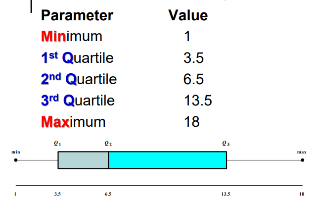

For a sample of size n, the mean is called Xˉ=N∑x
Mean is rounded to one more decimal place.
Weighted Mean
M=∑Wi∑WiXi
Estimating Mean:
Find class midpoints. Xm
Multiply each midpoint by it's frequency f.
Sum the products f.Xm
Divide by the sum of frequencies.
M=N∑f⋅Xm
Standard Deviation
It's the square ROOT of the Variance.
For a population: σ=σ2
For a sample: s=s2
Population Variance
σ2=Ni=1∑N(Xi−M)2
The variance is just a MEAN value.
It's the mean of the square distances to the population mean.
Squaring is required to get rid of negative distances.
Sample Variance
S2=n−1i=1∑n(Xi−Xˉ)2
NOTICE: We divide by n−1 and not N!
Shortcut formula:
S2=n−1i=1∑nXi2−n(i=1∑nXi)2
Steps to calculate standard deviation
Find the sum of the values ∑Xi
Square each value and sum them ∑Xi2
Substitute into the shortcut formula.
Compute square root.
Variance for Grouped data
For a population
σ2=∑f∑f.(Xm−M)2
For a sample:
S2=(∑f)−1∑f.Xm2−∑f(∑f.Xm)2
Chebyshev’s Theorem
Specifies the portions of the spread in terms of the S.D
The proportion of values from a data set will fall within k standard deviations of the mean Xˉ lying in the interval [X−ks,X+ks] will be at least 1/k21
k must be greater than 1.
Percentiles
Used to locate the relative position of a data value in a set.
To calculate the value, we:
Sort the data values first.
Percentile=n0.5+No.ofvalues∗100
How to reverse the above operation ?
Sort the data.
We calculate the position as m=n.100p
If m is not integer, we round it up to the higher integer.
If m is an integer, then the value is the average of position m and m+1.
Quartiles
Quartiles simply split the data into 4 equal parts splitting at Q1, Q2 and Q3!
The second quartile is simply the median!
Box Plots

Data Set Types
Normal: If its Histogram is bell-shaped with peak at exact median.
Approx. Normal: If its Histogram is approximately a normal one.
Skewed: not approximately symmetric about its sample median.